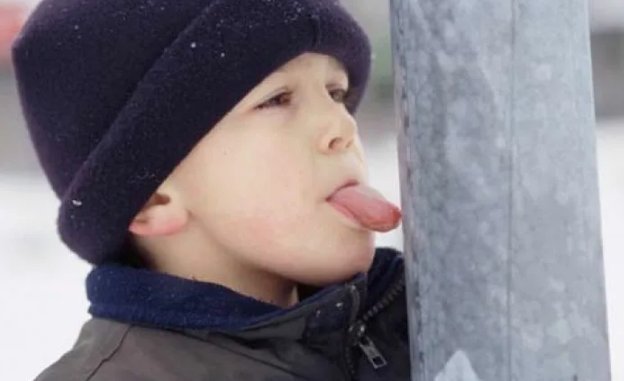
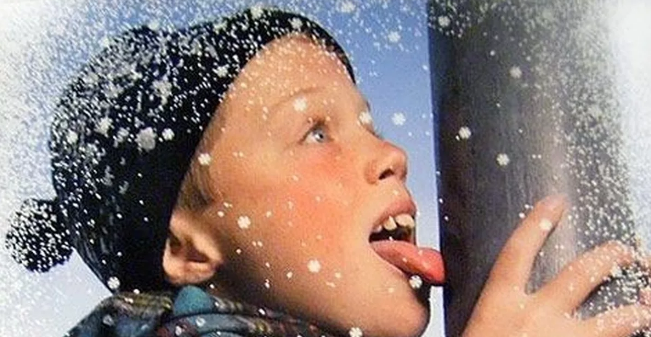
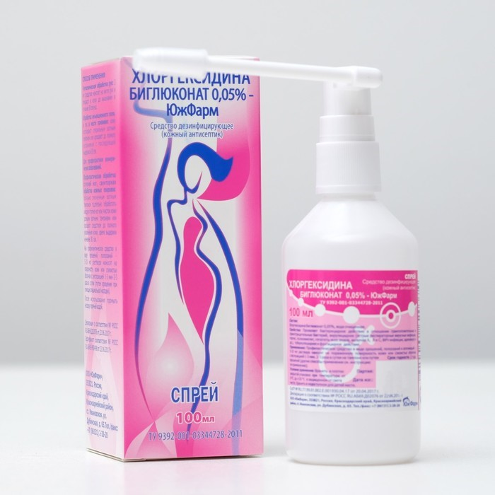

ЕСЛИ РЕБЕНОК ЛИЗНУЛ ЖЕЛЕЗО НА МОРОЗЕ
1. Объясните ребенку, что попытка лизать железо на морозе может закончиться серьезными последствиями.
2. В случае, если все-таки ребенок примерз языком, то без помощи посторонних ему не обойтись.
|

|
Если ребенок примерз только кончиком языка, не сильно, то порекомендуйте ему подышать теплым дыханием на место соприкосновения. Предупредите ребенка о том, что он должен оставлять язык в натянутом состоянии, чтобы, как только тот отмерзнет, тут же убрать его. |
|

|
Если ребенок лизнул железо на морозе и язык примерз сильно, большой областью, а на улице сильный мороз, тут одним дыханием вряд ли обойдешься. Посмотрите вокруг - наверняка рядом есть люди, возможно, кто-то живет поблизости, громко обратитесь к стоящим неподалеку с вопросом, кто может принести горячей воды. |
|

|
Что делать, если примерзший язык оторвали силой? |
Источник и подробная информация о действиях на сайте:
http//www.detki-77.ru
http//www.clevermama.ru
ТЕЛЕФОН СЛУЖБЫ СПАСЕНИЯ: 112